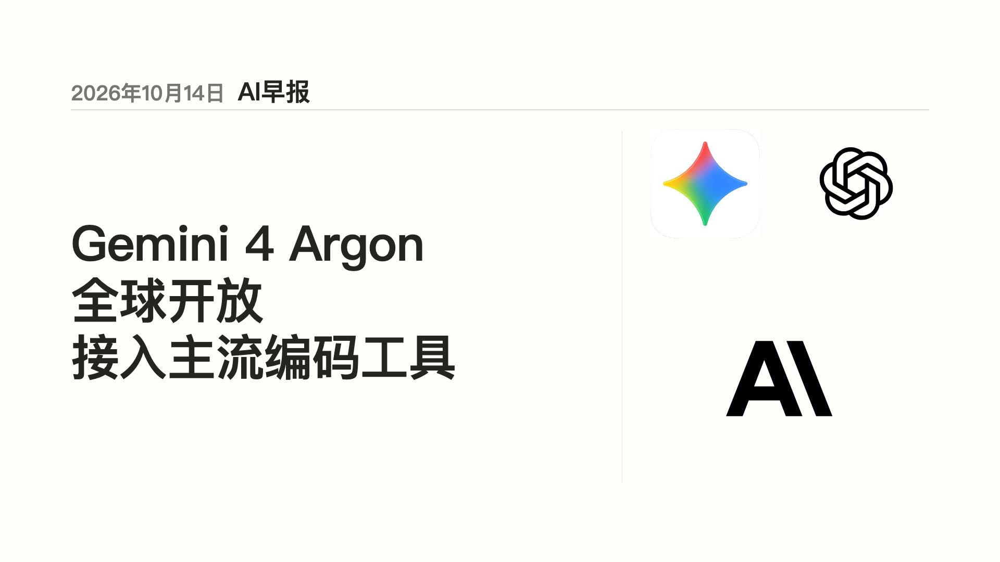
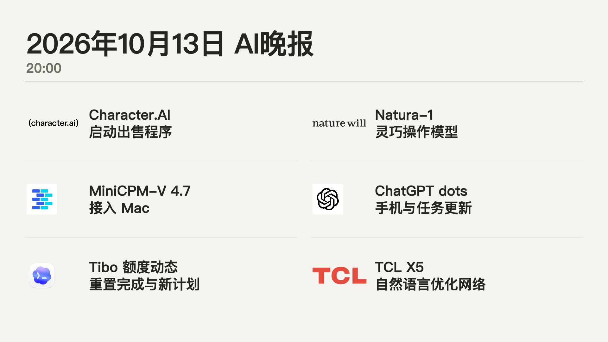
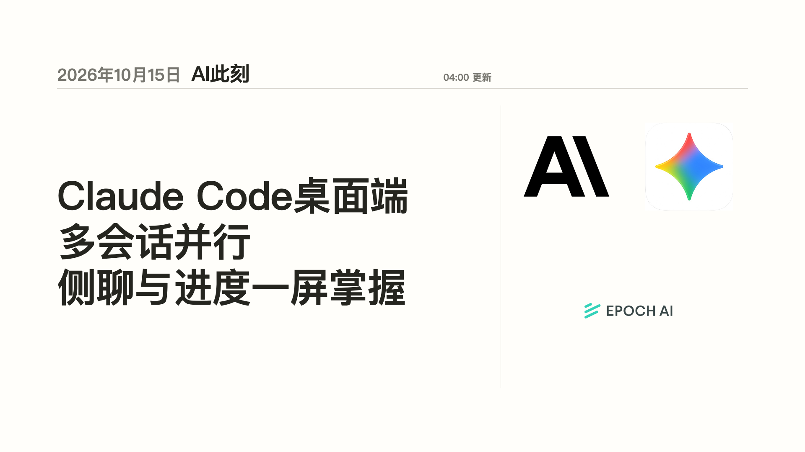

AI早报
216 秒 · 10 条新闻 · 1920 × 1080
故事与来源
- Gemini 4 Argon全球开放，并进入主流编码工具 — Google DeepMind
- Apple HomeView与新一代家庭产品 — Apple Newsroom
- 完整来源与编辑摘要见 reviewed-data.json。
三期真实成片，含原始封面、字幕、编辑摘要与公开来源。

216 秒 · 10 条新闻 · 1920 × 1080

190 秒 · 8 条新闻 · 1920 × 1080

82 秒 · 3 条新闻 · 1920 × 1080
页面展示本地成片与已保存的验证记录。视频播放验证不表示社交平台发布状态；故事来源链接指向公开发布方。